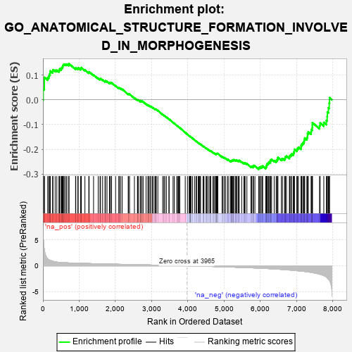
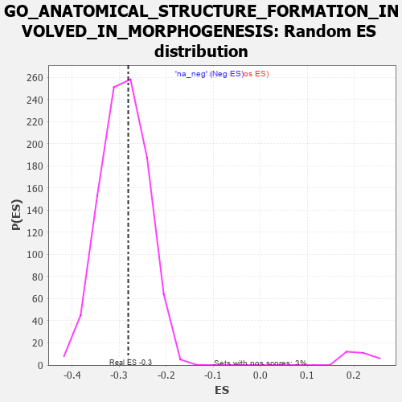

| | | Dataset | 7d |
| Phenotype | NoPhenotypeAvailable |
| Upregulated in class | na_neg |
| GeneSet | GO_ANATOMICAL_STRUCTURE_FORMATION_INVOLVED_IN_MORPHOGENESIS |
| Enrichment Score (ES) | -0.28094703 |
| Normalized Enrichment Score (NES) | -0.96722215 |
| Nominal p-value | 0.5746653 |
| FDR q-value | 0.9064725 |
| FWER p-Value | 1.0 |
Table: GSEA Results Summary

Fig 1: Enrichment plot: GO_ANATOMICAL_STRUCTURE_FORMATION_INVOLVED_IN_MORPHOGENESIS
Profile of the Running ES Score & Positions of GeneSet Members on the Rank Ordered List
| PROBE | GENE SYMBOL | GENE_TITLE | RANK IN GENE LIST | RANK METRIC SCORE | RUNNING ES | CORE ENRICHMENT | | 1 | ST14 | | | 7 | 5.713 | 0.0445 | No |
| 2 | MEOX1 | | | 39 | 3.159 | 0.0656 | No |
| 3 | SIX2 | | | 40 | 3.152 | 0.0907 | No |
| 4 | SP3 | | | 131 | 1.391 | 0.0901 | No |
| 5 | CSRP3 | | | 161 | 1.186 | 0.0958 | No |
| 6 | FOXF1 | | | 176 | 1.136 | 0.1030 | No |
| 7 | WNT16 | | | 198 | 1.072 | 0.1088 | No |
| 8 | BCL3 | | | 202 | 1.047 | 0.1168 | No |
| 9 | TBX20 | | | 267 | 0.880 | 0.1155 | No |
| 10 | HGF | | | 276 | 0.870 | 0.1214 | No |
| 11 | DLL1 | | | 337 | 0.760 | 0.1197 | No |
| 12 | AXIN2 | | | 383 | 0.713 | 0.1195 | No |
| 13 | SUFU | | | 443 | 0.665 | 0.1172 | No |
| 14 | ERCC1 | | | 453 | 0.660 | 0.1213 | No |
| 15 | LEO1 | | | 463 | 0.655 | 0.1253 | No |
| 16 | MYOD1 | | | 504 | 0.628 | 0.1251 | No |
| 17 | CNOT2 | | | 514 | 0.625 | 0.1289 | No |
| 18 | PKN1 | | | 535 | 0.619 | 0.1313 | No |
| 19 | SRF | | | 542 | 0.615 | 0.1354 | No |
| 20 | JMJD6 | | | 553 | 0.613 | 0.1390 | No |
| 21 | NLE1 | | | 565 | 0.609 | 0.1424 | No |
| 22 | ALX1 | | | 590 | 0.598 | 0.1440 | No |
| 23 | GLMN | | | 632 | 0.583 | 0.1434 | No |
| 24 | HES5 | | | 661 | 0.571 | 0.1443 | No |
| 25 | VASH1 | | | 712 | 0.556 | 0.1423 | No |
| 26 | ID1 | | | 719 | 0.555 | 0.1459 | No |
| 27 | HDAC5 | | | 900 | 0.506 | 0.1267 | No |
| 28 | WLS | | | 907 | 0.505 | 0.1299 | No |
| 29 | CTR9 | | | 964 | 0.492 | 0.1266 | No |
| 30 | DVL3 | | | 971 | 0.490 | 0.1297 | No |
| 31 | AKT1 | | | 1040 | 0.476 | 0.1247 | No |
| 32 | MEF2C | | | 1054 | 0.473 | 0.1268 | No |
| 33 | RBM15 | | | 1057 | 0.473 | 0.1303 | No |
| 34 | GAB1 | | | 1158 | 0.453 | 0.1210 | No |
| 35 | CDC73 | | | 1265 | 0.436 | 0.1107 | No |
| 36 | CNOT3 | | | 1274 | 0.435 | 0.1132 | No |
| 37 | SSBP3 | | | 1396 | 0.411 | 0.1008 | No |
| 38 | LIAS | | | 1524 | 0.387 | 0.0874 | No |
| 39 | FZD1 | | | 1574 | 0.379 | 0.0841 | No |
| 40 | PAF1 | | | 1588 | 0.376 | 0.0854 | No |
| 41 | TPPP | | | 1646 | 0.365 | 0.0810 | No |
| 42 | ERCC2 | | | 1712 | 0.354 | 0.0754 | No |
| 43 | MEIS1 | | | 1723 | 0.351 | 0.0769 | No |
| 44 | AGO2 | | | 1767 | 0.343 | 0.0741 | No |
| 45 | GATA4 | | | 1837 | 0.330 | 0.0678 | No |
| 46 | RTF1 | | | 1844 | 0.329 | 0.0696 | No |
| 47 | SMAD4 | | | 1860 | 0.326 | 0.0703 | No |
| 48 | CUL3 | | | 1893 | 0.321 | 0.0687 | No |
| 49 | FOXO4 | | | 2004 | 0.304 | 0.0569 | No |
| 50 | FOXD1 | | | 2093 | 0.292 | 0.0478 | No |
| 51 | BMP7 | | | 2107 | 0.290 | 0.0484 | No |
| 52 | ATOH8 | | | 2145 | 0.285 | 0.0459 | No |
| 53 | SYK | | | 2186 | 0.278 | 0.0430 | No |
| 54 | BCAS3 | | | 2352 | 0.253 | 0.0237 | No |
| 55 | MPP5 | | | 2362 | 0.251 | 0.0245 | No |
| 56 | HIPK2 | | | 2389 | 0.247 | 0.0231 | No |
| 57 | SALL4 | | | 2523 | 0.223 | 0.0077 | No |
| 58 | EMC10 | | | 2607 | 0.211 | -0.0014 | No |
| 59 | VAV3 | | | 2614 | 0.210 | -0.0005 | No |
| 60 | GNPAT | | | 2629 | 0.208 | -0.0006 | No |
| 61 | SASH1 | | | 2682 | 0.201 | -0.0057 | No |
| 62 | DSCAM | | | 2689 | 0.200 | -0.0049 | No |
| 63 | KDM6A | | | 2690 | 0.200 | -0.0033 | No |
| 64 | SLIT2 | | | 2724 | 0.195 | -0.0060 | No |
| 65 | RORA | | | 2730 | 0.193 | -0.0052 | No |
| 66 | TTLL1 | | | 2764 | 0.189 | -0.0079 | No |
| 67 | NR2E1 | | | 2844 | 0.177 | -0.0167 | No |
| 68 | FGFR2 | | | 2895 | 0.167 | -0.0218 | No |
| 69 | AGGF1 | | | 2911 | 0.164 | -0.0225 | No |
| 70 | ACVR1 | | | 2932 | 0.161 | -0.0238 | No |
| 71 | SHB | | | 2974 | 0.154 | -0.0279 | No |
| 72 | RNH1 | | | 2977 | 0.153 | -0.0269 | No |
| 73 | WNT4 | | | 3023 | 0.146 | -0.0316 | No |
| 74 | LEF1 | | | 3037 | 0.144 | -0.0321 | No |
| 75 | HDAC1 | | | 3086 | 0.138 | -0.0372 | No |
| 76 | AIMP1 | | | 3105 | 0.136 | -0.0384 | No |
| 77 | GPX1 | | | 3109 | 0.135 | -0.0377 | No |
| 78 | MTMR2 | | | 3126 | 0.133 | -0.0388 | No |
| 79 | PAX6 | | | 3170 | 0.127 | -0.0433 | No |
| 80 | SMAD3 | | | 3303 | 0.105 | -0.0595 | No |
| 81 | SMAD1 | | | 3337 | 0.099 | -0.0630 | No |
| 82 | FMN1 | | | 3363 | 0.095 | -0.0655 | No |
| 83 | MED1 | | | 3405 | 0.089 | -0.0701 | No |
| 84 | HGS | | | 3476 | 0.080 | -0.0785 | No |
| 85 | CDK5 | | | 3480 | 0.080 | -0.0782 | No |
| 86 | MAPK3 | | | 3589 | 0.062 | -0.0917 | No |
| 87 | NOLC1 | | | 3623 | 0.056 | -0.0955 | No |
| 88 | EPN2 | | | 3691 | 0.045 | -0.1038 | No |
| 89 | NF1 | | | 3713 | 0.040 | -0.1062 | No |
| 90 | FMNL3 | | | 3739 | 0.036 | -0.1092 | No |
| 91 | SKI | | | 3762 | 0.032 | -0.1118 | No |
| 92 | SBNO2 | | | 3774 | 0.032 | -0.1129 | No |
| 93 | NRG3 | | | 3925 | 0.005 | -0.1323 | No |
| 94 | EYA1 | | | 3987 | -0.006 | -0.1401 | No |
| 95 | VEZF1 | | | 4033 | -0.013 | -0.1458 | No |
| 96 | ACTN1 | | | 4050 | -0.016 | -0.1478 | No |
| 97 | DDAH1 | | | 4056 | -0.016 | -0.1483 | No |
| 98 | TAL1 | | | 4064 | -0.018 | -0.1490 | No |
| 99 | SFRP2 | | | 4065 | -0.018 | -0.1489 | No |
| 100 | ROBO2 | | | 4066 | -0.018 | -0.1487 | No |
| 101 | TCF15 | | | 4077 | -0.020 | -0.1499 | No |
| 102 | WNT2 | | | 4084 | -0.021 | -0.1505 | No |
| 103 | ABL1 | | | 4125 | -0.027 | -0.1554 | No |
| 104 | EXOC4 | | | 4182 | -0.039 | -0.1624 | No |
| 105 | FHL2 | | | 4222 | -0.046 | -0.1671 | No |
| 106 | GPC1 | | | 4238 | -0.048 | -0.1686 | No |
| 107 | WNT11 | | | 4282 | -0.056 | -0.1737 | No |
| 108 | TBX2 | | | 4303 | -0.060 | -0.1758 | No |
| 109 | CD109 | | | 4325 | -0.064 | -0.1780 | No |
| 110 | LHX5 | | | 4332 | -0.066 | -0.1783 | No |
| 111 | FIG4 | | | 4348 | -0.068 | -0.1797 | No |
| 112 | RALA | | | 4416 | -0.079 | -0.1877 | No |
| 113 | MYDGF | | | 4429 | -0.081 | -0.1886 | No |
| 114 | SETD2 | | | 4443 | -0.084 | -0.1896 | No |
| 115 | MEF2A | | | 4499 | -0.095 | -0.1960 | No |
| 116 | ILK | | | 4510 | -0.096 | -0.1965 | No |
| 117 | AAMP | | | 4539 | -0.103 | -0.1993 | No |
| 118 | CMA1 | | | 4580 | -0.114 | -0.2036 | No |
| 119 | ADTRP | | | 4612 | -0.120 | -0.2066 | No |
| 120 | GATA3 | | | 4614 | -0.120 | -0.2058 | No |
| 121 | SDK1 | | | 4627 | -0.124 | -0.2064 | No |
| 122 | PTK7 | | | 4687 | -0.136 | -0.2129 | No |
| 123 | LHX2 | | | 4716 | -0.143 | -0.2154 | No |
| 124 | CNNM4 | | | 4738 | -0.147 | -0.2169 | No |
| 125 | PLCG1 | | | 4770 | -0.151 | -0.2197 | No |
| 126 | PIM1 | | | 4776 | -0.152 | -0.2192 | No |
| 127 | RTN4 | | | 4783 | -0.154 | -0.2187 | No |
| 128 | SRPK2 | | | 4790 | -0.155 | -0.2183 | No |
| 129 | FLII | | | 4795 | -0.156 | -0.2175 | No |
| 130 | TERT | | | 4801 | -0.157 | -0.2169 | No |
| 131 | FBXW7 | | | 4816 | -0.161 | -0.2175 | No |
| 132 | WDR1 | | | 4824 | -0.163 | -0.2171 | No |
| 133 | EP300 | | | 4941 | -0.186 | -0.2306 | No |
| 134 | PRKDC | | | 4955 | -0.189 | -0.2308 | No |
| 135 | PROM1 | | | 4996 | -0.197 | -0.2344 | No |
| 136 | KLF4 | | | 5005 | -0.198 | -0.2338 | No |
| 137 | PDPK1 | | | 5043 | -0.207 | -0.2370 | No |
| 138 | ETS2 | | | 5096 | -0.223 | -0.2419 | No |
| 139 | MMP9 | | | 5108 | -0.227 | -0.2415 | No |
| 140 | TBX1 | | | 5166 | -0.241 | -0.2470 | No |
| 141 | PARVA | | | 5187 | -0.245 | -0.2476 | No |
| 142 | SMO | | | 5195 | -0.247 | -0.2465 | No |
| 143 | ATM | | | 5210 | -0.249 | -0.2464 | No |
| 144 | GPR4 | | | 5219 | -0.250 | -0.2454 | No |
| 145 | TMF1 | | | 5225 | -0.251 | -0.2441 | No |
| 146 | KRIT1 | | | 5248 | -0.257 | -0.2449 | No |
| 147 | FOXJ2 | | | 5249 | -0.257 | -0.2428 | No |
| 148 | PTEN | | | 5262 | -0.261 | -0.2423 | No |
| 149 | EPN1 | | | 5304 | -0.272 | -0.2454 | No |
| 150 | CD9 | | | 5319 | -0.277 | -0.2450 | No |
| 151 | TCF21 | | | 5340 | -0.283 | -0.2454 | No |
| 152 | EPHA1 | | | 5349 | -0.285 | -0.2441 | No |
| 153 | FZD5 | | | 5386 | -0.292 | -0.2465 | No |
| 154 | SOX8 | | | 5404 | -0.296 | -0.2463 | No |
| 155 | LATS1 | | | 5412 | -0.298 | -0.2449 | No |
| 156 | STIL | | | 5483 | -0.314 | -0.2514 | No |
| 157 | FGFR1 | | | 5543 | -0.332 | -0.2564 | No |
| 158 | EHD1 | | | 5560 | -0.336 | -0.2558 | No |
| 159 | SPHK1 | | | 5576 | -0.339 | -0.2550 | No |
| 160 | ROR2 | | | 5626 | -0.353 | -0.2586 | No |
| 161 | PDCL3 | | | 5738 | -0.388 | -0.2698 | No |
| 162 | TLR2 | | | 5761 | -0.395 | -0.2695 | No |
| 163 | RDH13 | | | 5797 | -0.405 | -0.2708 | No |
| 164 | ADA | | | 5798 | -0.405 | -0.2676 | No |
| 165 | BBS4 | | | 5806 | -0.407 | -0.2653 | No |
| 166 | ARL6 | | | 5847 | -0.417 | -0.2671 | No |
| 167 | AGFG1 | | | 5955 | -0.457 | -0.2773 | Yes |
| 168 | ACTN2 | | | 5960 | -0.458 | -0.2742 | Yes |
| 169 | GABPA | | | 5977 | -0.464 | -0.2726 | Yes |
| 170 | XBP1 | | | 6011 | -0.475 | -0.2731 | Yes |
| 171 | PRKX | | | 6016 | -0.477 | -0.2698 | Yes |
| 172 | FZD8 | | | 6051 | -0.490 | -0.2703 | Yes |
| 173 | JAG1 | | | 6060 | -0.494 | -0.2674 | Yes |
| 174 | STK4 | | | 6145 | -0.518 | -0.2741 | Yes |
| 175 | ROCK1 | | | 6152 | -0.520 | -0.2708 | Yes |
| 176 | STIM1 | | | 6169 | -0.528 | -0.2686 | Yes |
| 177 | GRID2 | | | 6170 | -0.528 | -0.2644 | Yes |
| 178 | KLF2 | | | 6182 | -0.532 | -0.2616 | Yes |
| 179 | FJX1 | | | 6186 | -0.533 | -0.2578 | Yes |
| 180 | SMAD2 | | | 6216 | -0.541 | -0.2572 | Yes |
| 181 | TPM1 | | | 6226 | -0.545 | -0.2541 | Yes |
| 182 | CDC42 | | | 6236 | -0.548 | -0.2509 | Yes |
| 183 | HSBP1 | | | 6273 | -0.562 | -0.2510 | Yes |
| 184 | FLOT1 | | | 6276 | -0.564 | -0.2468 | Yes |
| 185 | IFT52 | | | 6280 | -0.566 | -0.2427 | Yes |
| 186 | IFT57 | | | 6307 | -0.579 | -0.2415 | Yes |
| 187 | CDON | | | 6378 | -0.607 | -0.2457 | Yes |
| 188 | ABCA2 | | | 6433 | -0.634 | -0.2476 | Yes |
| 189 | SF3B6 | | | 6444 | -0.637 | -0.2439 | Yes |
| 190 | HERC1 | | | 6467 | -0.647 | -0.2415 | Yes |
| 191 | SOX2 | | | 6477 | -0.652 | -0.2375 | Yes |
| 192 | DYSF | | | 6481 | -0.654 | -0.2327 | Yes |
| 193 | ROBO1 | | | 6577 | -0.699 | -0.2394 | Yes |
| 194 | MKS1 | | | 6607 | -0.715 | -0.2375 | Yes |
| 195 | TMED2 | | | 6665 | -0.746 | -0.2389 | Yes |
| 196 | VASH2 | | | 6680 | -0.752 | -0.2348 | Yes |
| 197 | SAT1 | | | 6688 | -0.756 | -0.2297 | Yes |
| 198 | DMRT2 | | | 6718 | -0.768 | -0.2273 | Yes |
| 199 | TBPL1 | | | 6798 | -0.814 | -0.2310 | Yes |
| 200 | ADAM9 | | | 6808 | -0.819 | -0.2257 | Yes |
| 201 | FHOD3 | | | 6835 | -0.834 | -0.2224 | Yes |
| 202 | AHI1 | | | 6860 | -0.848 | -0.2188 | Yes |
| 203 | MYH11 | | | 6905 | -0.870 | -0.2176 | Yes |
| 204 | CSPG4 | | | 6918 | -0.878 | -0.2121 | Yes |
| 205 | MIB1 | | | 6932 | -0.890 | -0.2067 | Yes |
| 206 | GHSR | | | 6937 | -0.894 | -0.2002 | Yes |
| 207 | CCR2 | | | 7003 | -0.939 | -0.2011 | Yes |
| 208 | NR4A1 | | | 7022 | -0.951 | -0.1958 | Yes |
| 209 | MYH10 | | | 7048 | -0.966 | -0.1914 | Yes |
| 210 | LDB3 | | | 7119 | -1.008 | -0.1924 | Yes |
| 211 | PTPRB | | | 7122 | -1.010 | -0.1847 | Yes |
| 212 | WHRN | | | 7139 | -1.025 | -0.1786 | Yes |
| 213 | AR | | | 7169 | -1.046 | -0.1740 | Yes |
| 214 | OVOL2 | | | 7197 | -1.068 | -0.1690 | Yes |
| 215 | MFN2 | | | 7208 | -1.081 | -0.1617 | Yes |
| 216 | LAMB1 | | | 7220 | -1.094 | -0.1544 | Yes |
| 217 | CIB1 | | | 7280 | -1.152 | -0.1529 | Yes |
| 218 | ANK2 | | | 7298 | -1.170 | -0.1458 | Yes |
| 219 | MSX2 | | | 7299 | -1.171 | -0.1365 | Yes |
| 220 | GRN | | | 7319 | -1.194 | -0.1294 | Yes |
| 221 | CELA1 | | | 7399 | -1.265 | -0.1296 | Yes |
| 222 | LOXL2 | | | 7403 | -1.269 | -0.1199 | Yes |
| 223 | KLF5 | | | 7429 | -1.304 | -0.1127 | Yes |
| 224 | LHX1 | | | 7431 | -1.305 | -0.1025 | Yes |
| 225 | MMP19 | | | 7433 | -1.309 | -0.0922 | Yes |
| 226 | PDCD6 | | | 7630 | -1.615 | -0.1047 | Yes |
| 227 | PTF1A | | | 7646 | -1.637 | -0.0936 | Yes |
| 228 | CASP3 | | | 7747 | -1.902 | -0.0914 | Yes |
| 229 | TRAF6 | | | 7818 | -2.157 | -0.0833 | Yes |
| 230 | SP1 | | | 7840 | -2.321 | -0.0676 | Yes |
| 231 | DLX5 | | | 7845 | -2.378 | -0.0492 | Yes |
| 232 | MMP2 | | | 7875 | -2.574 | -0.0325 | Yes |
| 233 | CAV3 | | | 7896 | -2.739 | -0.0133 | Yes |
| 234 | FBN2 | | | 7906 | -2.873 | 0.0084 | Yes |
Table: GSEA details [plain text format]

Fig 2: GO_ANATOMICAL_STRUCTURE_FORMATION_INVOLVED_IN_MORPHOGENESIS: Random ES distribution
Gene set null distribution of ES for GO_ANATOMICAL_STRUCTURE_FORMATION_INVOLVED_IN_MORPHOGENESIS